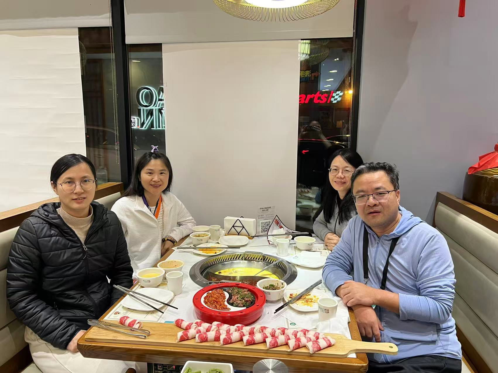
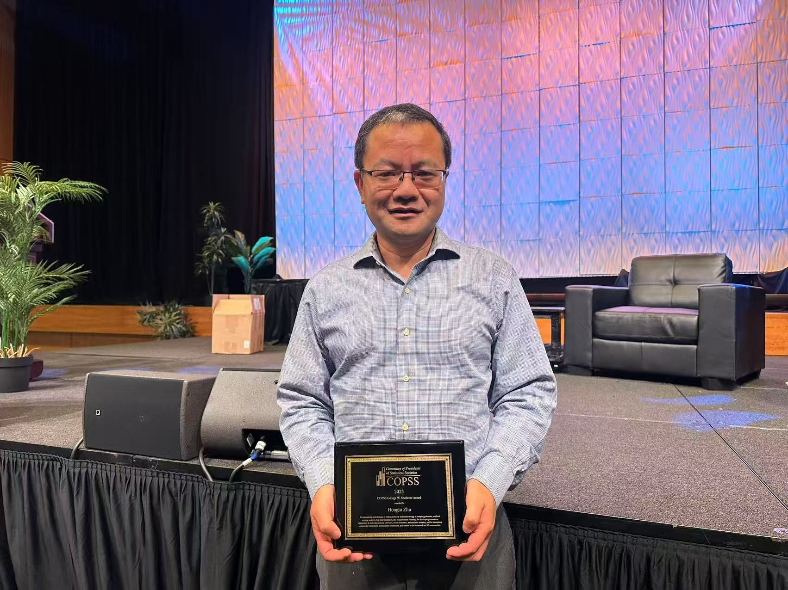
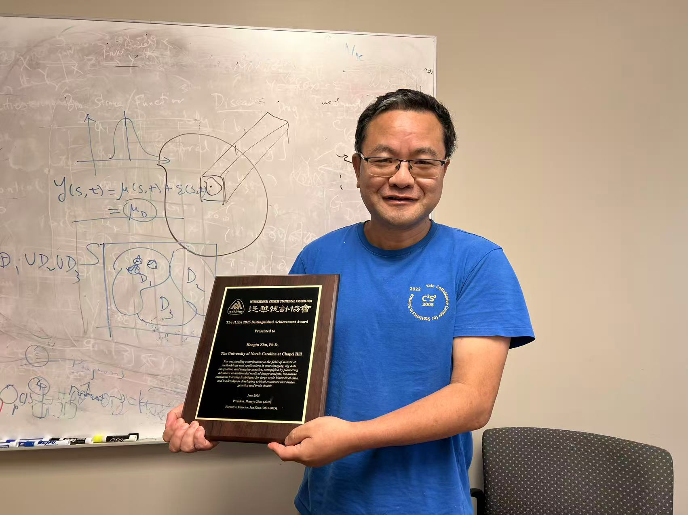
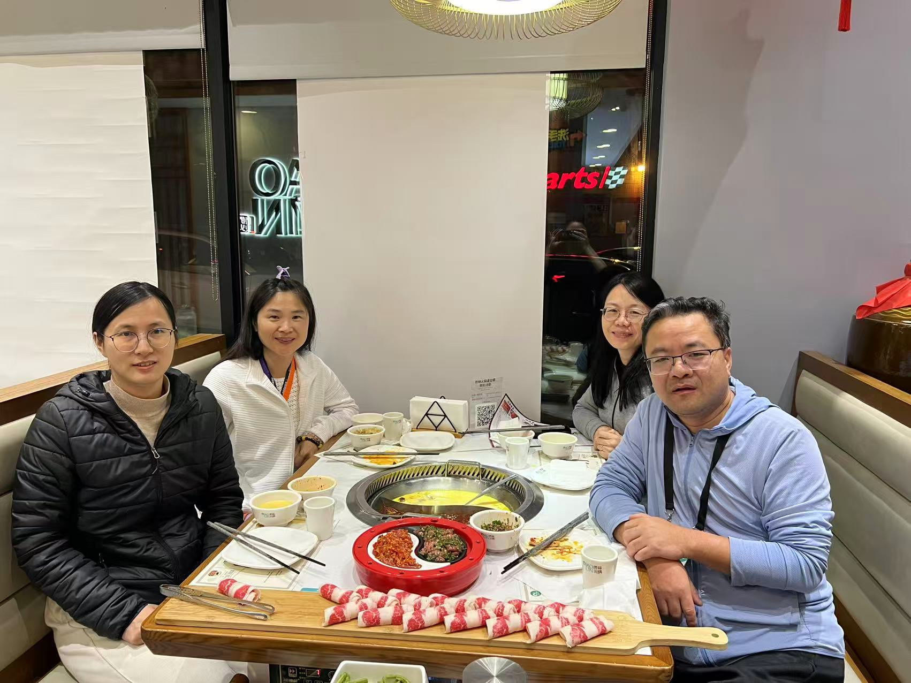
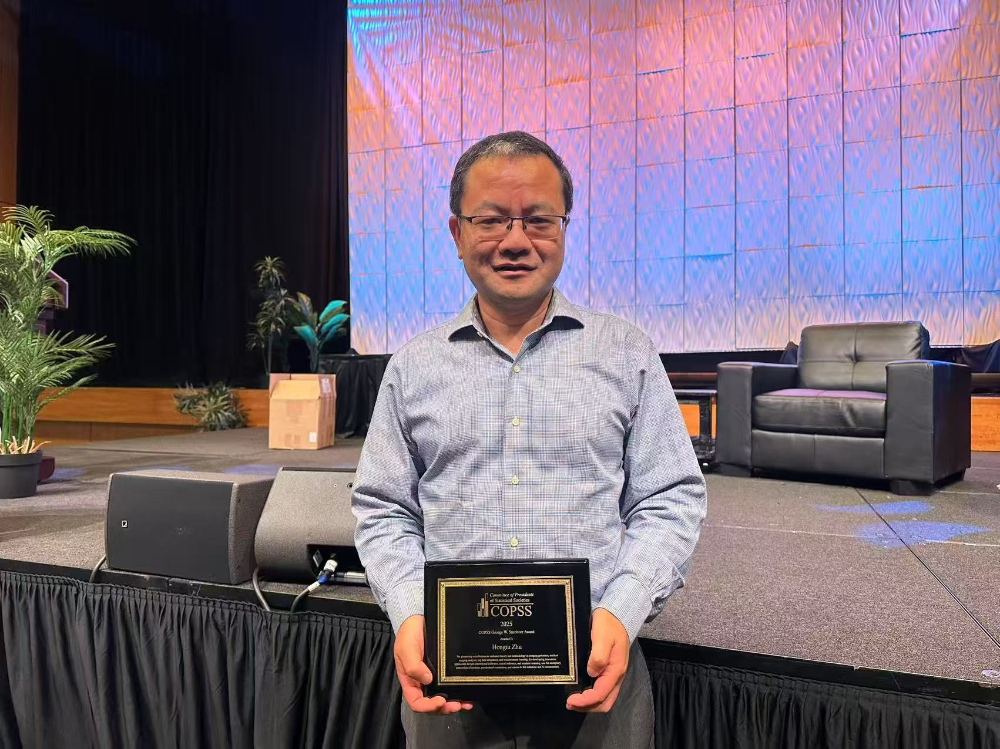
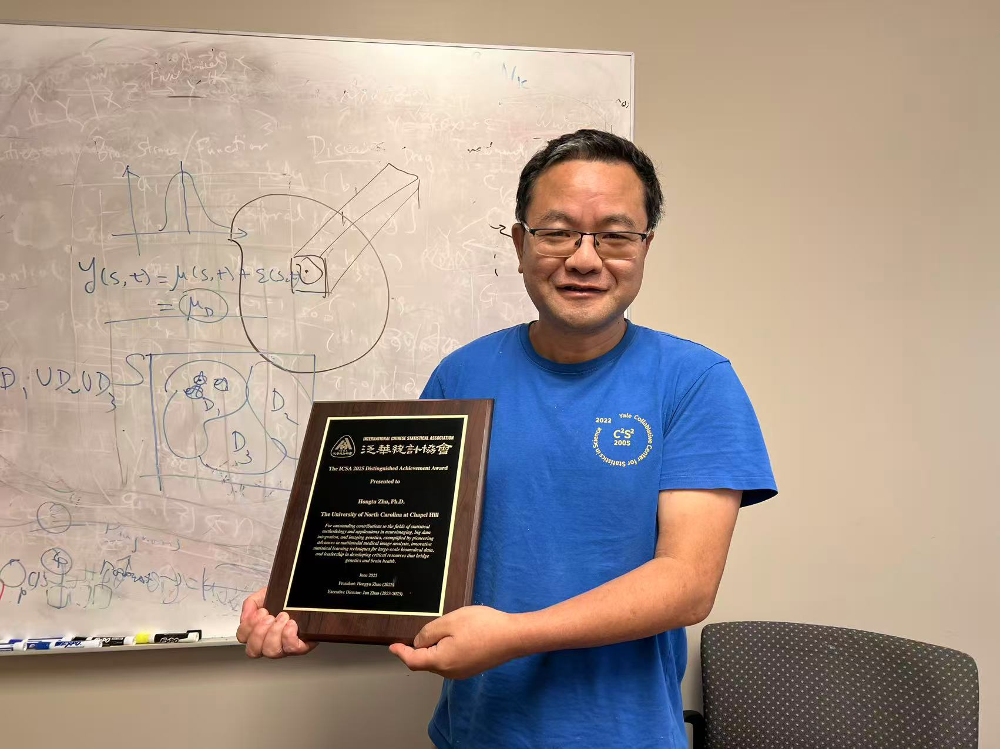

This 2025 annual report for the Biostatistics and Imaging Genomics (BIG-S2) details a year of unparalleled academic influence, marked by elite leadership honors, high-impact research, and the expansion of digital biomedical infrastructure.

Lab leader Hongtu Zhu received historic professional recognition this year, establishing himself as a global authority at the intersection of statistics, AI, and medicine:
George W. Snedecor Award (2025)
Honored by the Committee of Presidents of Statistical Societies (COPSS) for pioneering contributions to statistical theory and methodology in imaging genomics, medical imaging analysis, and big data integration.
IEEE Fellow (Class of 2025)
Named a Fellow of the Institute of Electrical and Electronics Engineers for an outstanding record of accomplishments in data integration in medical imaging and genetics, and for applying learning in ridesharing.
ICSA Distinguished Achievement Award (2025)
Recognized by the International Chinese Statistical Association for his long-standing, significant impact on the field of statistics.
Editorial Leadership
The Coordinating Editor for the Journal of the American Statistical Association (2025–2027), overseeing applications and case studies.
The lab and its leadership have expanded their influence through the creation of specialized professional communities and the hosting of global scientific forums:
Organization — StatsUpAI
Hongtu Zhu leads this community dedicated to empowering statisticians to participate more actively in AI research and leadership. The organization provides curated datasets, ready-to-use pipelines, and a library of review articles to help statisticians address real-world challenges using combined statistical and AI approaches.
2025 Workshop
Zhu serves as a Co-Chair of the workshop “Foundation Models and Their Biomedical Applications: Bridging the Gap,” to be held August 17–22, 2025.
The lab's research output in 2025 focused on multi-organ genetic architecture and the integration of artificial intelligence with mental health:
"UKB-MDRMF: a multi-disease risk and multimorbidity framework based on UK biobank data" Nature Comm
Published in Nature Communications (16: 3767).
"Large language model powered knowledge graph construction for mental health exploration" Nature Comm
Published in Nature Communications (16: 7526).
"Inferring multi-organ genetic connections using imaging and clinical data through Mendelian randomization" Nature BioEng
Published in Nature Biomedical Engineering.
"Computation and resource efficient genome-wide association analysis for large-scale imaging studies" Nature Comm
Published in Nature Communications.
BIG-S2 significantly expanded its role as an educational hub, offering elite training at premier international venues:
Causal Generalist Medical AI (Causal GMAI/CGMAI)
This intensive program was offered at both the DahShu Data Science Symposium 2025 and the Duke & Chen Institute Joint Boot Camp. It introduces a paradigm integrating causal inference with generalist AI to improve the robustness and interpretability of medical decision-making.
AAAI 2025 (Philadelphia)
A half-day tutorial titled "Decision Intelligence for Two-sided Marketplaces," providing an in-depth look at reinforcement learning for long-term optimization in ridesharing.
JSM 2025 (Nashville)
A full-day short course (CE_01) on "Deep Learning Methods in Advanced Statistical Problems," exploring intersections between deep learning and statistical methodology.
2,104
Neuroimaging Traits
The lab continues to lead the development of biomedical knowledge graphs, essential for automating complex data analysis:
BIG-KP
The Brain Imaging Genetics Knowledge Portal accelerates genetic discoveries in the human brain, supporting GWAS results for 2,104 functional, structural, and diffusion neuroimaging traits.
Heartkp.org
The lab launched this "twin" website dedicated to mapping 82 imaging traits for the heart.
Data Scale
The lab consistently analyzes genetics and neuroimaging data for more than 120,000 subjects.
Knowledge Graph
The lab builds large-scale, domain-specific knowledge graphs for Alzheimer’s disease and mental disorders, supporting integrative analysis across biomedical literature and real-world patient data.
The BIG-S2 legacy of excellence was reinforced by major 2025 awards granted to its distinguished alumni:
Bingxin Zhao (Wharton School)
Received the 2025 IMS Tweedie New Researcher Award for seminal contributions to imaging genetics in neuroscience and the development of the BIG-KP platform.
Linglong Kong (University of Alberta)
Awarded the 2025 CRM-SSC Prize in Statistics, recognizing research excellence in high-dimensional statistics and neuroimaging.
Dr. Yize Zhao (Yale School of Public Health)
Received the 2025 IMS Thelma and Marvin Zelen Emerging Women Leaders in Data Science Award for contributions to medical imaging, neuroscience, and mental health.
Fan Zhou (Shanghai University of Finance and Economics)
Named a 2025 Ministry of Education Young Changjiang Scholar.
In 2025, BIG-S2 functioned as a biological super-navigator; by building intricate knowledge graphs, leading the StatsUpAI organization, and offering elite short courses, the lab provided the global research community with the "GPS" and the training necessary to navigate the complex genetic landscape of the brain and heart.


 




